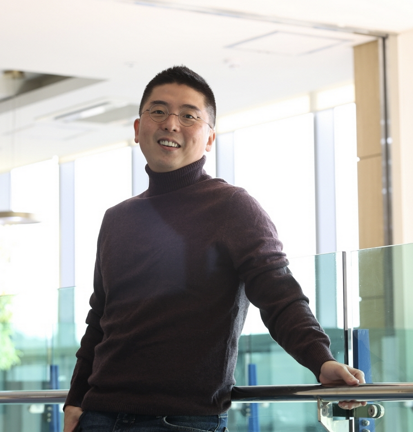

I study the intersection of data science, computational social science, and public policy — using large-scale network data and machine learning to understand labor markets, AI governance, and the hidden structures that shape innovation and culture.

Network analysis and large-scale data to reveal hidden structures in labor markets, culture, and innovation ecosystems.
How governments and institutions both shape and are reshaped by artificial intelligence — from governance models to behavioral effects.
Mapping the global flow of talent and skills, and understanding how technology transforms the structure of work over time.
Open to research collaborations, speaking invitations, and conversations about data, policy, and society.
KDI School of Public Policy and Management
263 Namsejong-ro, Sejong-si, South Korea